Etelä-Manmarch
Jos laskeudut Porrasmailta Porrasmaat kaakkoon, huomaat olevasi kumpuilevalla preerialla. Maa viettää loivasti itää kohti, Kauhujoen Kauhujoki rannoille.
Matkalaisia ja kauppiaita kulkee näiden tasankojen yli runsain mitoin. He tulevat pohjoiseen Lygosista ja sivistyneestä etelästä Lygos ja etelä, suuntaavat pohjoiseen Valtatielle Tekijöiden tiet ja sieltä Suonreunaan (Marshedge) Suonreuna.
Tai he kulkevat toiseen suuntaan ja vievät yrttejä ja kankaita, metalleja ja jalokiviä takaisin eteläisiin kaupunkeihin. Tai he tulevat Valtatien takaa, Pohjois-Manmarchista Pohjois-Manmarch, metsästämään, käymään kauppaa tai ryöstämään.
Mutta kaikista Etelä-Manmarchin läpi kulkevista harva kutsuu sitä kodikseen. Toki Kukkulakansa Kukkulakansa laiduntaa täällä laumojaan lämpimämpinä kuukausina. Ja jokin uusi asutus putkahtaa aina esiin. Mutta maata täplittävät palaneet tilat ja raunioituneet linnoitukset: mykkä todistus niistä, jotka ovat aiemmin yrittäneet asettua tänne. Yrittäneet, ja epäonnistuneet.
Vaikutelmat
Aina
- Ikuinen, välinpitämätön taivas
- Ohut, kivikkoinen maaperä, jota katkovat valkoisen kalkkikiven ja harmaan liuskeen paljastumat
- Savua yksinäiseltä tilalta, joka katsoo vesireitin ylle
- Puro tai kuiva uoma, joka mutkittelee laiskasti kohti Kauhujokea
- Hylätty, sortunut pitkätalo
- Kukkulakansan ratsastajajoukko, joka tarkkailee korkeammalta maalta

Kevät- Kirjava matto uutta ruohoa ja luonnonkukkia – keltaista, vaaleanvihreää, sireeninväristä
- Pieniä kosteikkoja, joissa pesivät hiljattain etelästä palanneet sorsat
- Suuri lintuparvi, joka purkautuu pensaikosta

Kesä- Siristelyä häikäisevää taivasta vasten
- Kesän hyönteisten kiihkeä ja hellittämätön kuoro, jonka sävy ja rytmi vaihtelevat vuorokaudenajan mukaan
- Korkea ruoho täydessä kasvussaan, vyötärön korkuista ja aaltoilevaa etelätuulessa.
- Valkohäntäpeurojen tai mahtavien saksanhirvien lauma laiduntamassa pitkällä rinteellä

Syksy- Ruosteenruskeiksi muuttuneet heinäntähkät, korret yhä vihreinä
- Puron varren poppelimetsikkö, joka hehkuu kultaisena hämärän valossa

Talvi- Päiväkausia hiovaa lounaistuulta
- Puuterimaisia lumikinoksia, jotka ulottuvat maiseman poimujen suojanpuolelle
- Kuolleen ruohon laikkuja, jotka hohtavat oransseina lumen läpi
Kauan kiistelty maa
Ennen Mullistusta Alla Olevat Kauhujoki oli Kiven Herrojen Kiven Herrat alueen itäraja. Kiven Herrojen kukistuttua Kumpujen rakentajat Kumpujen rakentajat taistelivat toisiaan vastaan edestakaisin tämän avaruuden poikki ja kuluttivat itsensä loppuun, kuin liuskeen sirpaleet, jotka ajan myötä hioutuvat pölyksi.
Nyt Etelä-Manmarch on raja sivistyneen etelän ja Maailman Äären takamaiden välillä. Se on laiton paikka, täynnä vaarallisia petoja ja vielä vaarallisempia ihmisiä. Paimentolaiset Kukkulakansasta pitävät suurta osaa seudusta omanaan, ja rosvot Rosvo ovat jatkuva uhka.
Ja silti preerian houkutus on suuri.
Suunnilleen joka vuosi joku yrittää kaivertaa siitä palan itselleen. Uusi asutus voi olla:
- Suonreunalainen tai pohjoismanmarchilainen perhe, joka perustaa oman tilansa
- Kunnianhimoinen lygosilainen kauppias, joka investoi uuteen kauppa-asemaan tai karavaanimajataloon
- Joku manmarchilaisten Pohjois-Manmarch päälliköksi tai sotaherraksi pyrkivä, joka rakentaa uutta kyläpahasta tai kukkulalinnaa
- Etelän valloittavat armeijat Lygos ja etelä, jotka hankkivat jalansijaa
Tällaiset asutukset kestävät harvoin. Ne joutuvat luonnononnettomuuksien tai vaeltavien petojen, kilpailijoiden tai rosvojen tai näitä maita omanaan pitävän Kukkulakansan varman vihan uhreiksi.
Tai ehkä, jos tarinoihin on uskominen, liikkeellä on jotain synkempää. Ehkä nämä maat todella kummittelevat. Täällä kuolleiden lukuisten sielujen kummittelemina. Tai saastaisten olentojen, jotka luikertelevat ulos Kauhujoesta. Ehkä maa on kirottu, eikä mikään asutus voi koskaan selvitä. Ehkä.
Piivirta
Tämä Porrasmailta Kauhujokeen laskeva vesireitti houkuttelee loivien rantojensa äärelle tiheikköjä, poppelilehtoja, villieläimiä ja vaeltajia. Kukkulakansa kutsuu sitä omalla kielellään nimellä Maengwalc – ”Piivirta (Flintwash)” sen kivisen ylätasangon mukaan, jolta sen lähteet pulppuavat.
Sadat norot ja purot ruokkivat Piivirtaa, ja alajuoksullaan se on varsin leveä ja vaikea ylittää. Keinoja kuitenkin on. Miten matkalainen pääsee puolelta toiselle? Kysy pelaajahahmolta, joka tietäisi, mutta ehkä on…
- vanha silta Tekijöiden Tekijät ajoilta;
- uudempi silta, jonka joku eteläinen kauppias tai ylimys on rakennuttanut suurin kustannuksin;
- matala kahlaamo; leveä, kivikkoinen ja yleensä turvallinen;
- lautta, jota yritteliäät sielut pitävät;
- jokin yhdistelmä edellisistä; tai
- jotain aivan muuta.
Kysymykset
- Kenet tunsit, joka yritti asettua Etelä-Manmarchiin? Mikä kohtalo häntä kohtasi?
- Mitä rosvojoukkoa pelätään tällä hetkellä eniten? Kuka sitä johtaa, ja mikä tekee siitä niin vaarallisen?
- Minkä maamerkin luona kauppakaravaanit tavallisesti leiriytyvät? Miksi ne pysähtyvät siellä?
- Mitä maamerkkiä jokainen näillä mailla matkaava tietää välttää? Miksi?
Koukut
- Joku on vallannut Piivirran ylityspaikan ja perii kohtuuttomia tulleja
- Kunnianhimoinen päällikkö Pohjois-Manmarchista lähettää uudisasukkaita Valtatien eteläpuolelle
- Pelaajahahmot odottavat innokkaasti karavaania, mutta rosvot väijyvät sen
- Seudun raunioista tulee pyhiinvaelluspaikka, joka houkuttelee Heliorin/Aratiin uskovia kaikkialta
Maasto
Valitse 1 tai yhdistä 2, tai anna jonkun heittää Kohtalon noppaa () kerran tai kahdesti.
| 1 | Tuhkakenttä/karu maa/hiekka/kivikkoinen kaistale |
|---|---|
| 2 | Kolo/maakuoppa/käytävästö |
| 3 | Liejuinen maa/muta/pieni kosteikko |
| 4 | Lähde/lampi/oja/puro/joki |
| 5-6 | Avoin niitty, vyötärön korkuista ruohoa |
| 7-8 | Lyhytheinäinen preeria, laaja ja avoin |
| 9 | Polku/vankkurinurat/reitti |
| 10 | Puu(t), savanni, tiheiköt |
| 11 | Loiva rinne/matala harjanne/pieni kukkula |
| 12 | Jyrkkä rinne/kalliopaljastuma/suuri kukkula |
Halutessasi heitä koon/laajuuden/voimakkuuden määrittämiseksi.
Löydöt
Valitse mihin tahansa näistä 1 tai anna jonkun heittää Kohtalon noppaa.
| 1 | Maaston muutos (edellinen sivu), ja heitä uudelleen |
|---|---|
| 2 | Tilaisuus saada tietoa uhasta tai vaarasta (esim. jäljet, jotka paljastavat lukumäärän, olinpaikan tms.) |
| 3 | Hyödyllistä tai arvokasta kasvillisuutta |
| 4 | peto (ks. alla) |
| 5 | Kohtaaminen (ks. alla) |
| 6 | Kiinnostava paikka (seuraava palsta) |
| 1-3 | Enimmäkseen vaaraton, mutta altis pakenemaan: peuroja, jäniksiä, preeriakoiria, lintuja tms. |
|---|---|
| 4-5 | Lauma: alkuhärkiä, vuohia, lampaita, villihevosia tms. |
| 6 | Jotain suurta ja majesteettista: brawzbedr, jättiläisiibis, sarvitraakki, ukkostraakki tms. |
| 1 | Kukkulakansaa: leirissä, paimentamassa, metsällä, partiossa, tulossa kaupoille tai kenties ryöstöretkellä |
|---|---|
| 2 | Kauppiaiden karavaani, tulossa tai menossa |
| 3 | Rosvoja, leirissä, tiedustelemassa, palaamassa ryöstöretkeltä |
| 4 | Uudisasukkaita, jotka toivovat raivaavansa tänne kodin |
| 5 | Joku hädässä; heitä uudelleen nähdäksesi kuka |
| 6 | Erämaan henki, utelias tai välinpitämätön |
| 1 | Alla Olevien turmelema paikka |
|---|---|
| 2 | Kumpujen rakentajien hauta, kohde tai artefakti |
| 3 | Taistelukenttä tai jäänteet (alla) |
| 4 | Kiven Herrojen raunio tai linnoitus |
| 5 | Erämaan hengille pyhä paikka |
| 6 | Uusi asutus |
| 1 | Todella muinainen: Tekijöiden ajalta |
|---|---|
| 2 | Mullistuksen ajalta, jolloin ihmiskunta kapinoi ja herätti Alla Olevat |
| 3-4 | Kumpujen rakentajien välisestä konfliktista |
| 5-7 | Aiemmasta asuttamisyrityksestä: palanut, sortunut, umpeenkasvanut |
| 8-10 | Tuore: Kukkulakansa, rosvot, matkalaiset, uudisasukkaat, pedot |
| 11-12 | Hyvin tuore: hiirihaukat ja varikset yhä mässäilemässä |
Monissa tällaisissa paikoissa kummittelevat Kuolema ja kuolemattomat kuolleet.
Vaarat
Vaaratekijät
- Paahtava aurinko, ei varjoa kilometrikaupalla
- Ikävä säänmuutos: piiskaava tuuli, purevan kylmä, polttava kuumuus, räntä/ rakeet/sade/lumi; salamointi
- Äkkitulvat laaksoissa/rinteillä
- Suojan, veden tai pitkään palavan nuotion puiden puute (kokeile kuivattua alkuhärän lantaa, jos löydät)
- Kätkettyjä kuoppia/koloja, jotka nyrjäyttävät nilkan tai pahempaa
- Preeriapalo Tasangot
Hirviöt
- Petoeläimet: puumat Suurmetsä, kleztigr Porrasmaat, laumatraakit Tasangot tai sudet Suurmetsä
- Suuret äksyt pedot: alkuhärät Tasangot, villisika Suurmetsä tai ukkostraakki Tasangot
- Erämaan henget Erämaan henget
- Aaveet Kuolema ja kuolemattomat tai palanneet Kuolema ja kuolemattomat, jotka vaanivat muinaisten taistelukenttien tai raunioituneiden asutusten lähellä
Ihmiset
- Kukkulakansa Kukkulakansa, jos se on väkivaltaisella tuulella
- Pohjoismanmarchilaiset Pohjois-Manmarch, matkalla etelään tai puolustamassa uutta asutusta
- Kauppiaat Suonreunasta Suonreuna, matkalla etelään tai tulossa kotiin
- Eteläiset kauppiaat Lygos ja etelä ja heidän karavaaninvartijansa sekä heidän kanssaan matkaavat, kuten seikkailijat tai antikvaari Lygos ja etelä
- Etelän armeijat Lygos ja etelä, jotka tulevat pohjoiseen kostamaan, turvaamaan voimavaroja tai hankkimaan jalansijaa
 Sarvitraakki
Sarvitraakki
HP 24; Panssari 3 (kivinen nahka)
Vahinko tallova rynnäkkö (käsi, alue, sysäävä) tai sarvipuhkaisu (lähellä, sysäävä, sotkuinen, 1 lävistävä)
Vaisto suojella poikasiaan
by their young (group, large, hardy; HP 14
Damage
Vaisto uteliaisuus, leikkitappelu), joita ne puolustavat aggressiivisesti.
- Päästä toitottava huuto
- Pidä pintansa, liikkumatta kuin kallio
- Syöksy äkkiä rynnäkköön
- Ime raakaa elementtivoimaa (ja saa takaisin HP)
Eteläisten ruohoaavikoiden behemot on vaikuttava valtavan kokonsa, nivelikkään nahkansa kvartsimaisten levyjen ja pelottavien sarviensa vuoksi. Sarvet vaihtelevat suuresti pedosta toiseen: yhdestä piikistä kuonossa tai otsassa viiden tai kuuden kaarevan kärjen sarjaan, joka reunustaa sen valtavan kallon laippoja. Pelottava peto levossakin.
Kukkulakansalle d'lkornekin (”piikkilohikäärme”) kaataminen on sankariteko, jota seuraa viikon mittainen saaliin käsittely ja juhla kaatopaikalla.
Jotain kiinnostavaa: Jotkut oppineet väittävät Kiven Herrojen antaneen sarvitraakeille elementtiominaisuuksia. Niiden nahan näytteitä luullaan usein dolomiitiksi tai joksikin muuksi mineraaliksi, ja Kukkulakansa arvostaa niiden sarvia (Arvo 3).
Jotain hyödyllistä: D'lkornekin sarvet toimivat kuin voimakristallit, mutta suurempina ja suurella kapasiteetilla.
Niiden talteenotto on äärimmäisen vaarallista; viisas teurastaja vuodattaa niiden energian hitaasti pois päivien kuluessa.
Aikuisten sarvitraakkien seurassa voi olla
Rosvo
HP 3; Panssari enintään 2 (nahat, kilvet)
Vahinko keihäs (lähellä, heitettävä) tai linko (likellä, hankala, lataus)
Vaisto selviytyä muiden kustannuksella
- Tuki kulkutie, esitä tyly vaatimus
- Väijy pimeyden turvin
- Pyydä parhaista lunnaat, tapa loput
Tekijöiden tiet rajoittavat rosvoilua suurimmassa osassa Maailman Ääreä.
Ei niin Etelä-Manmarchissa. Täällä kauppiaat matkaavat ilman suojattujen kiveysten turvaa. Ja nuo kauppiaat houkuttelevat rosvoja kuin lanta kärpäsiä. Kirjavaa väkeä nämä rosvot. Konnia Suonreunasta. Karkureita pohjoisen ja etelän armeijoista. Karkotettuja kukkulalaisia. Lurjuksia. Pahantekijöitä. Kuka tahansa, joka on valmis tahraamaan kätensä punaisiksi, oikeastaan.
Rosvopäällikkö
HP 8; Panssari 3 (nahat, kilpi, taito)
Vahinko keihäs (lähellä, heitettävä, 1 lävistävä) tai jousi (likellä)
Vaisto elää parasta elämäänsä lain ulottumattomissa
- Huokua raakaa karismaa
- Osoittaa suurta asetaitoa
- Ei siedä erimielisyyttä
Jokainen joukko vaatii pomon; karkotetut ja hylätyt sitäkin enemmän. Mikä erottaa tämän johtajan muista? (valitse 2 tai 3)
• Pahamaineisuus, todellisten tai keksittyjen tekojen vuoksi
• Pelottomuus, joka kumpuaa veteraanin itsevarmuudesta tai amatöörin typeryydestä
• Hauras liitto kukkulalaisjoukon kanssa
• Erämaan henki -apuri
• Kumppani, joka on velho tai henkipuhuja